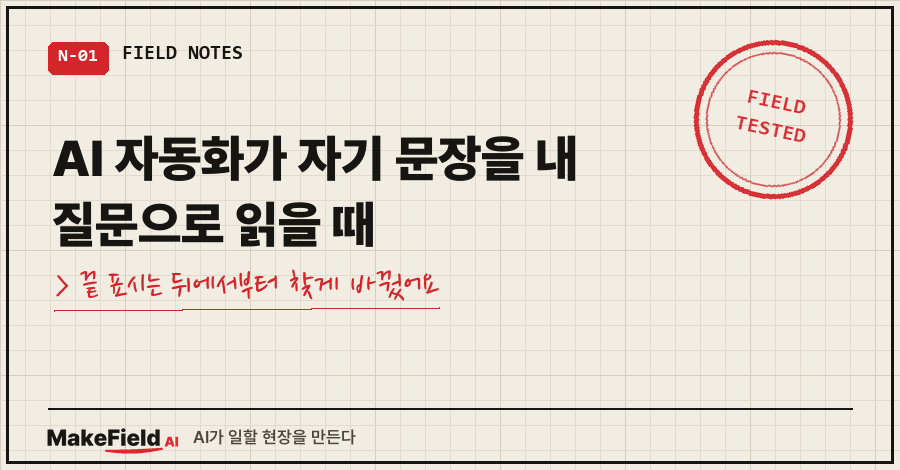
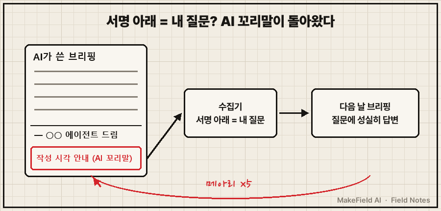
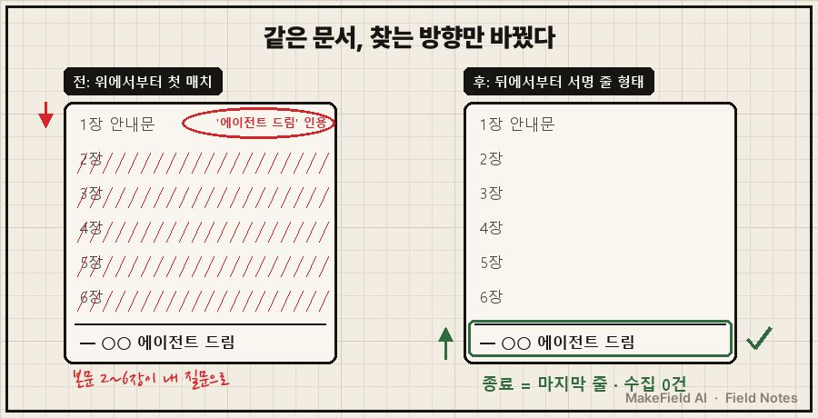
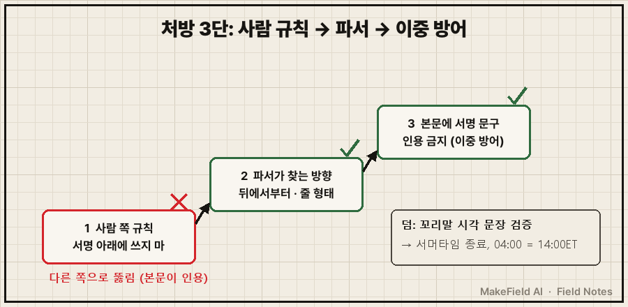

아침 브리핑을 열었더니, AI가 제 질문에 성실하게 답하고 있었어요.
그런데 그 질문, 제가 쓴 게 아니었습니다. 전날 AI 자신이 쓴 문장이었어요.
결론부터 적을게요. AI 자동화가 자기 문장을 내 질문으로 읽는다면, 사람 칸과 AI 칸을 가르는 '끝 표시 문구'를 파서가 어느 방향에서, 어떤 형태로 찾는지부터 보세요. 제 경우엔 위에서부터 첫 번째로 나오는 문구를 끝으로 잡고 있었고, 뒤에서부터 '줄 형태'로 찾게 바꾸고 나서야 멈췄어요.
공장 쪽 자동화·데이터 일을 15년째 하고 있는데요, 퇴근 후엔 개인 투자 공부용 브리핑을 AI한테 매일 새벽 쓰게 해 두고 있어요. 이 일은 그 개인 자동화에서 다섯 번 반복된 '메아리' 이야기입니다.
1. 어떤 구조였길래 AI가 자기 말에 답했나요?
규칙은 딱 하나였어요. "서명 줄 아래에 적힌 글은 전부 내가 쓴 질문이다."
AI가 새벽에 브리핑을 메모 앱 페이지에 올리고, 맨 끝에 "— ○○ 에이전트 드림" 서명을 붙여요.
저는 읽다가 궁금한 게 생기면 서명 아래에 한 줄 적어 두고요.
밤에 수집기가 돌면서 서명 아래 글을 긁어 가고, 다음 날 브리핑이 거기에 답합니다.
사람 칸과 AI 칸을 문구 하나로 가른 셈이죠. 이게 문제의 씨앗이었어요.

2. 첫 번째~네 번째 메아리: 서명 아래에 붙은 꼬리말
9월 27일, 29일, 30일. AI가 서명 아래에 "작성 시각 안내" 꼬리말을 붙였고, 수집기가 그걸 제 질문으로 주워 갔어요. 사흘 연속이었습니다.
게다가 같은 문장이 두 번씩 돌아왔어요.
AI가 처음 내놓은 원인 추정은 "질문 저장 파일이 누적돼서"였는데, 실제로 돌려 확인해 보니 틀렸습니다.
실제로는 수집기가 오늘 페이지와 어제 페이지를 둘 다 읽고 있었어요. 전날 브리핑에 늦게 단 질문도 놓치지 않으려고 일부러 그렇게 만든 설계라서, 서명 아래 꼬리말은 구조적으로 두 번 회귀할 수밖에 없었던 거죠.
처방은 이랬어요.
서명은 항상 문서의 마지막 줄 — 그 아래에는 아무것도 쓰지 않는다
작성 시각 안내는 표지(제목 아래) 회색 줄로 옮긴다10월 3일에 확인하니 10월 1일·2일치 수집 결과가 둘 다 비어 있었어요. 닷새 이어지던 메아리가 끝난 줄 알았습니다.
3. 다섯 번째 메아리: 본문이 서명 문구를 '인용'했어요
10월 5일, 이번엔 브리핑 본문 1장 안내문이 서명 문구를 글자 그대로 인용했어요. 수집기는 위에서부터 찾다가 그 인용을 서명으로 착각했고, 본문 2~6장 전체가 "제가 직접 쓴 질문"으로 빨려 들어갔습니다.
서명 아래를 비우라는 처방은 한쪽 방향만 막은 거였어요. AI가 서명 아래에 안 쓰는 대신, 서명 위에 서명 문구를 썼으니까요.
그래서 사람 쪽 규칙을 하나 더 얹는 대신, 수집기가 끝을 찾는 방식 자체를 바꿨어요.
# 전: 위에서부터, 문구가 '들어 있는' 첫 줄
for i, line in enumerate(lines):
if "에이전트 드림" in line:
return i
# 후: 뒤에서부터, 서명 '줄 형태'로 시작하는 줄 우선
for i in range(len(lines) - 1, -1, -1):
if lines[i].strip().lstrip("—-– ").startswith("○○ 에이전트 드림"):
return i
# 없으면 폴백: 뒤에서부터 문구가 들어 있는 마지막 줄파이썬 공식 문서 표현으로 하면 find()는 문자열이 처음 나오는 가장 낮은 위치, rfind()는 가장 높은 위치를 돌려줘요. 끝 표시는 원래 맨 끝에 있으니, 찾는 것도 끝에서부터가 맞았던 거예요.
10월 5일·6일 문서로 돌려 보니 종료 지점이 마지막 줄로 잡히고 수집 0건. 덤으로 본문에 서명 문구를 인용하지 말라는 규칙도 남겨 이중으로 막았습니다.
장비 통신 쪽 프로토콜이 시작·끝 표시 문자를 따로 정하고, 본문에 같은 문자가 나오면 바꿔 적게(이스케이프) 하는 이유도 결국 이거예요. 여러분 자동화에도 "이 문구 아래는 사람 칸" 같은 경계가 있나요?

4. 메아리를 처음 '읽어 보다가' 찾은 진짜 시한폭탄
네 번째 메아리가 돌아온 날, 저는 그 꼬리말을 처음으로 '내용까지' 검증해 봤어요. 거기엔 "새벽 4시 = 미 동부 15시"라고 적혀 있었는데, 이건 11월부터 틀리는 문장이었습니다.
미국 서머타임은 2026년엔 11월 1일 새벽 2시(현지)에 끝나요(미국 표준기술연구소 NIST 안내, 매년 11월 첫째 일요일). 그래서 11월 2일 브리핑부터는
한국 04:00 = 미 동부 14:00 (EST)
미국 장 마감 = 한국 06:00 → 브리핑이 놓치는 시간 = 마지막 2시간으로 바뀝니다. 10월 2일에 미리 고지 규칙을 적어 뒀고, 내년 3월 둘째 일요일에 서머타임이 다시 시작되면 그때도 미리 알리게 했어요.
같은 문장을 매일 봤는데, 다섯 번째가 되도록 아무도 그 내용은 안 읽었던 거예요. 여러 번 봤다고 검증한 건 아니었습니다.
5. 처방이 두 번 빗나가고 세 번째에 잡힌 순서
| 회차 | 무엇이 새어 들어왔나 | 처방 | 결과 |
|---|---|---|---|
| 1~4번째 | 서명 아래 AI 꼬리말 (이틀씩 중복 수집) | 서명=마지막 줄, 안내는 표지로 | 닷새 만에 멈춤 |
| 5번째 | 본문이 서명 문구를 인용 | 뒤에서부터, 줄 형태로 찾기 + 인용 금지 | 수집 0건 확인 |
| 덤 | 꼬리말 속 시각 문장 | 서머타임 사전 고지 | 11/2부터 14:00ET 표기 |

같은 날 하나 더 나왔어요. 10월 5일 문서 맨 위에 10월 4일 표지가 그대로 남아 있었는데, 전날 생성 스크립트를 복사하면서 지우지 않은 거였어요. 그래서 복사해서 쓸 땐 표지 블록이 1개뿐인지 확인하는 규칙도 붙였습니다.
자주 묻는 질문
Q. 끝 표시를 아예 안 겹칠 문구로 바꾸면 되지 않나요?
AI가 그 문구를 쓰는 순간 똑같아져요. 제 경우도 AI가 안내문에서 서명을 친절하게 인용하다 생긴 일이었어요. 문구를 바꾸는 것보다 찾는 방향과 줄 형태를 정해 두는 게 오래갑니다.
Q. 어제 페이지까지 두 번 읽는 건 고치지 않았나요?
안 고쳤어요. 늦게 단 질문을 잡으려는 의도된 설계라서요. 서명 아래를 비우니 중복 문제는 같이 사라졌습니다.
이번 일로 바뀐 건 하나예요. 사람 칸과 AI 칸을 문구로 가를 때, 이제는 그 문구를 AI가 언젠가 쓴다고 보고 파서부터 설계합니다.
개인 자동화가 어디서 새고, 어떻게 막았는지는 makefield.ai에도 차곡차곡 남기고 있어요.
출처
- Python 공식 문서, Built-in Types — str.find("Return the lowest index…"), str.rfind("Return the highest index…") → https://docs.python.org/3/library/stdtypes.html
- NIST, Daylight Saving Time (DST) — 3월 둘째 일요일 시작·11월 첫째 일요일 종료, 2026년은 3월 8일~11월 1일, Energy Policy Act of 2005 → https://www.nist.gov/pml/time-and-frequency-division/popular-links/daylight-saving-time-dst
태그: #AI자동화오류 #AI자동화 #끝표시문구 #구분자충돌 #파이썬rfind #rfind #뒤에서부터찾기 #자동화파서 #질문수집 #AI브리핑 #개인자동화 #서머타임종료 #미국서머타임 #AI오류해결 #MakeFieldAI